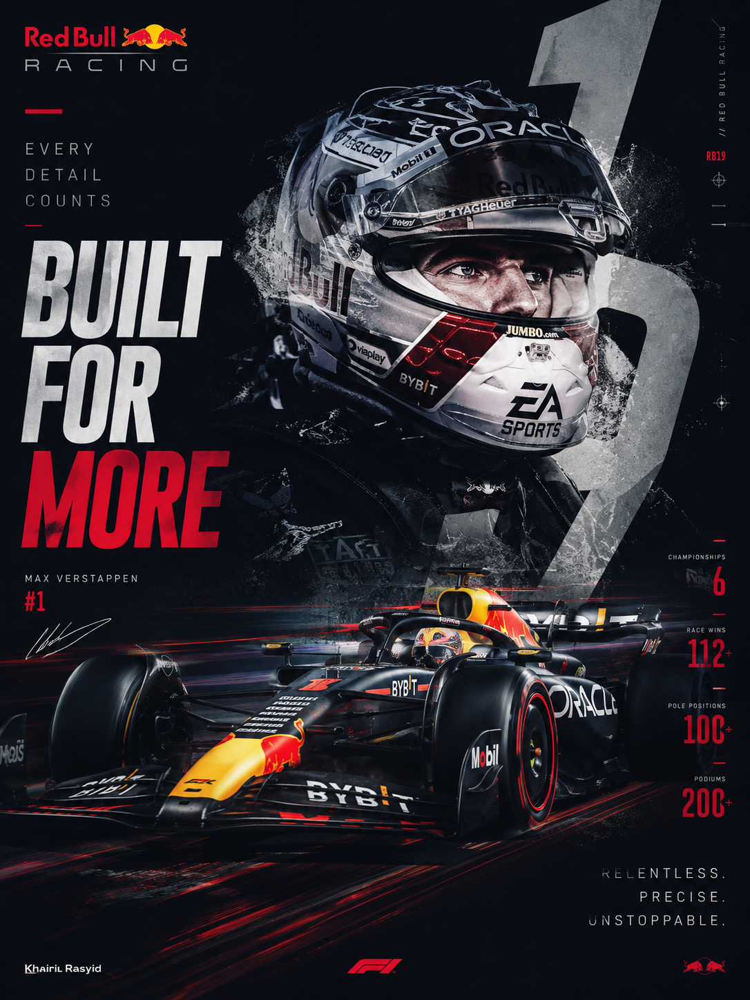
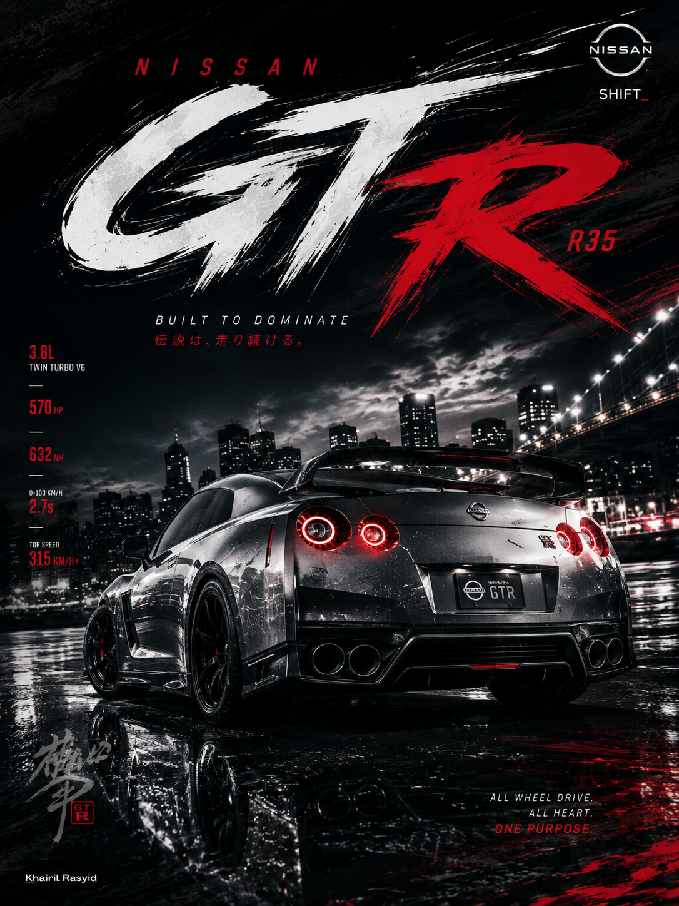
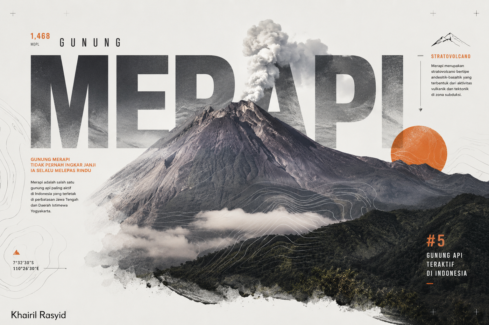

Personal Portfolio
Khairil Rasyid GFX Designer, AMV Editor & Music Creator
I create clean, cinematic, and premium visuals for digital content, anime music videos, motion edits, and creative music projects.
GFX
Visual Design
AMV
Video Editing
Music
SoundCloud

Phone Only Creator
Creative Editor
Phone Only Workflow
Edited Fully on Mobile
All of my works are created and edited entirely on phone, without any PC workflow. For video editing, I use apps like Alight Motion, CapCut, and KineMaster. For GFX and graphic design, I work with PixelLab and Photoshop Touch.
Selected Works
GFX Portfolio
A collection of visual design works. Replace these placeholder images with your own GFX designs.



Motion Works
AMV Editing
A showcase of my editing styles, from beat-sync AMVs to cinematic anime cuts and motion-based visuals.

Motion Visual Edit
Clean movement, text animation, visual rhythm, and polished graphic elements for a modern editing style.
Watch on YouTube
Impact Beat Edit
Fast-paced anime editing with strong beat sync, impact cuts, shakes, flashes, zooms, and energetic transitions.
Watch on YouTube
Cinematic Anime Edit
A smoother and more emotional edit style with atmosphere, pacing, color mood, and cinematic composition.
Watch on YouTube
Connect With Me
Social Links
Follow my works, watch my edits, listen to my music, or contact me for projects.
↗
↗
↗
↗
↗